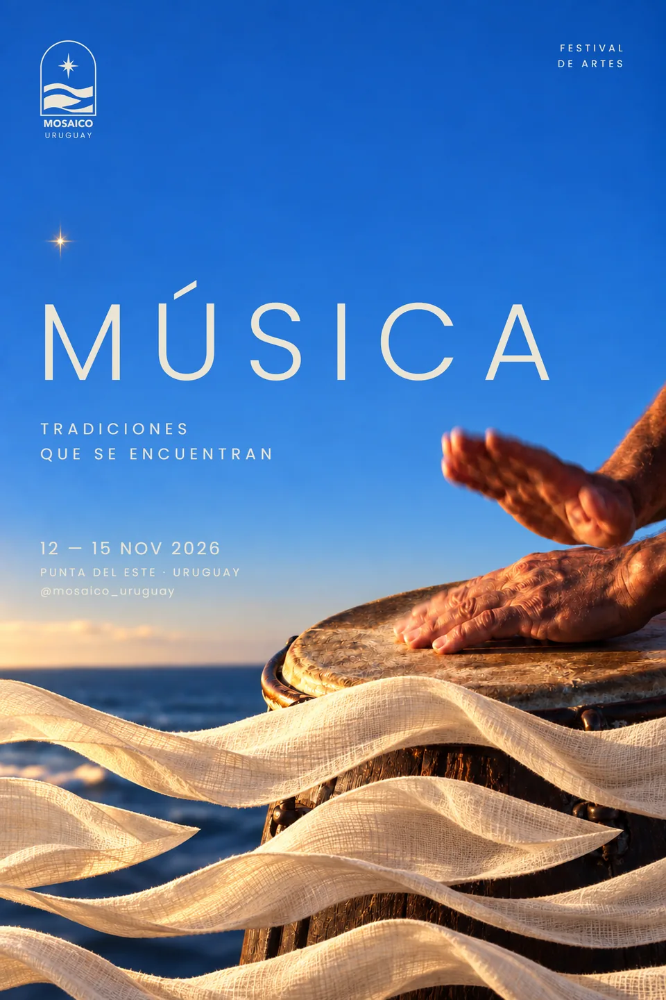
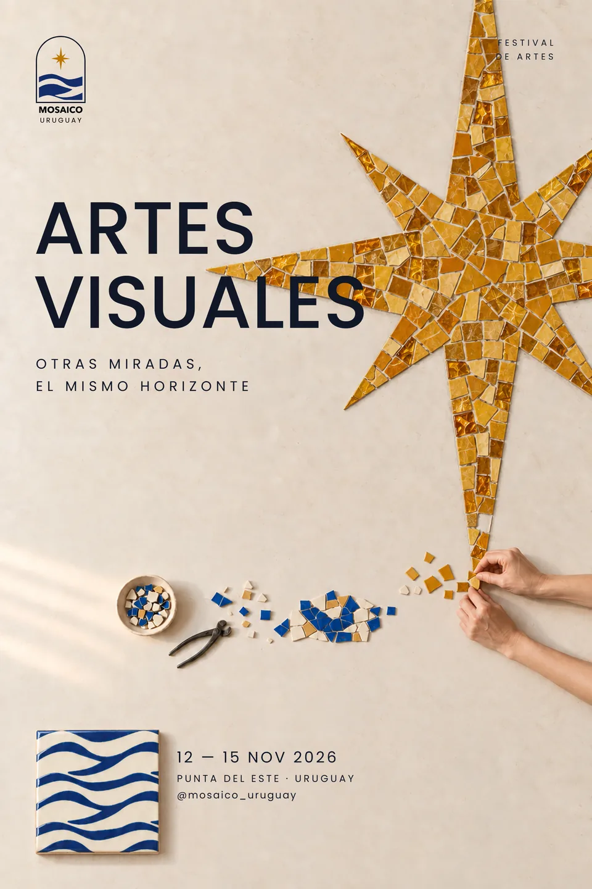

01 · 2026Fictional arts festival
Mosaico Uruguay
Identity and a system of pieces for an arts festival in Punta del Este.
Five disciplines (music, dance, visual arts, theatre and culinary art) had to read as a single festival. And the festival had to break away from Punta del Este's image as a party destination. The answer is a mosaic: each discipline is a different piece, and the festival is the figure they make together.
Identity, system and pieces



Martín Rivoir · martin.rivoir4@gmail.com02